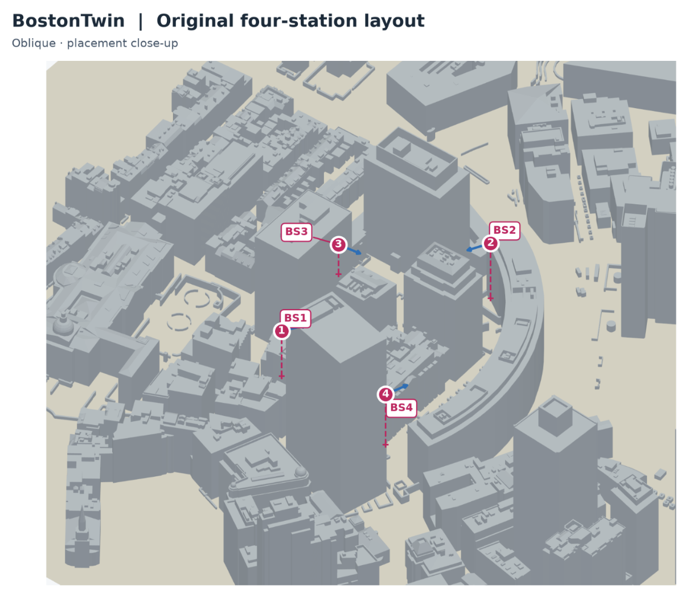

AI-Based MIMO Positioning via Beam-Delay Profiles and Digital Twins Canan Cebeci, Josef Ullrich, Oveys Delafrooz, Yiming Li, Tingjun Chen, Upamanyu Madhow 60th Annual Asilomar Conference on Signals, Systems, and Computers · 2026 Presentation ↗ 